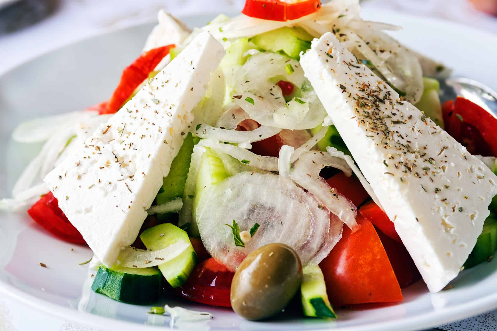

Greek Salad

It's time for the health nuts favorite. The Greek Salad! Invented by Greeks for Greeks, this salad it the perfect dish to unleash your inner freak.
Ingredients
- Heart of romaine lettuce stalk
- 1 whole cucumber
- half of a large red onion
- Cherry tomatoes
- Sweet sweet roasted beets
- Kalamata olives
- The crowning glory, block feta cheese soaking in brine. This is the stuff that make your mouth water as you melt into the salad, your very essence becoming part of the dressing itself
- Salt and pepper
- High-quality greek olive oil and red wine vinegar
Now that we've got the goods, lets get to it.
- Chop up your lettuce stalk, cucumber, onion, and tomatoes and let them get comfortable
- Add some olives in there
- Squish the feta in your hand and crumble it all over that bad boy. Lick your hands afterwords to taste the briney goodness
- Add salt and pepper
- Add oil and vinegar to your liking